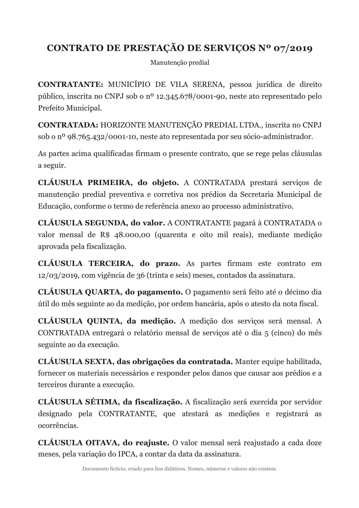
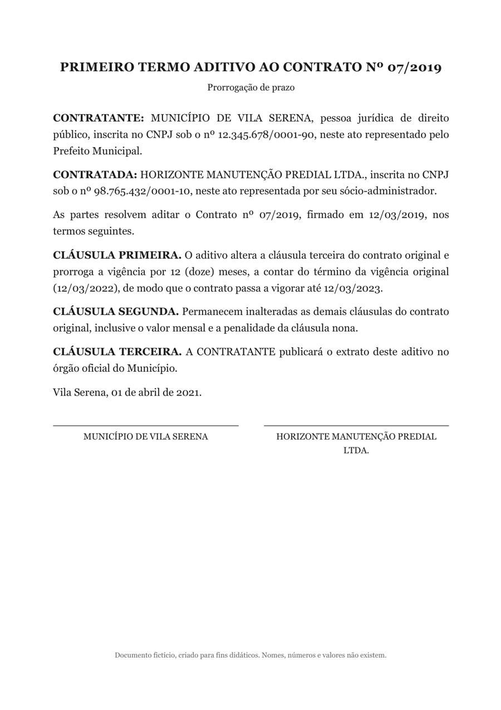
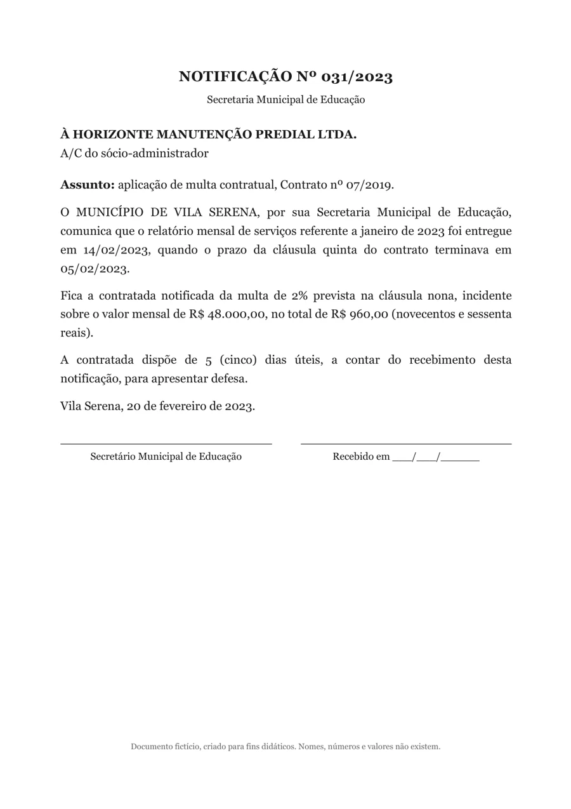
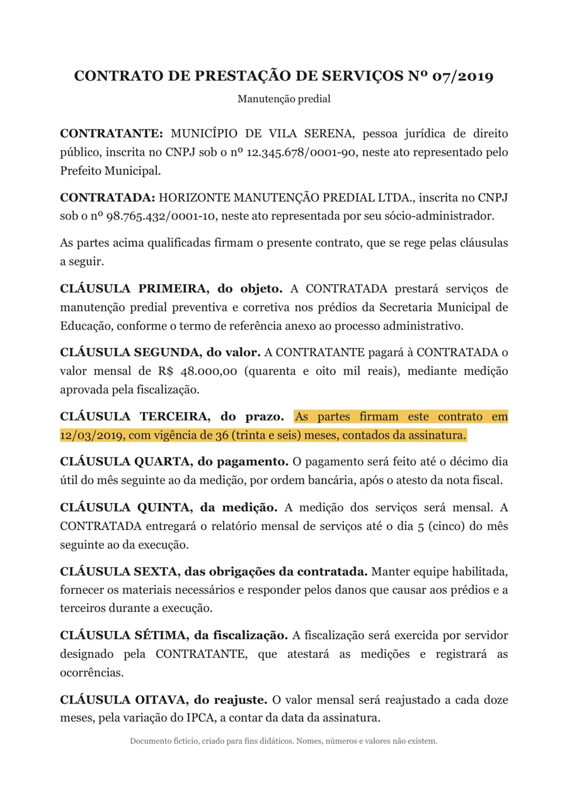
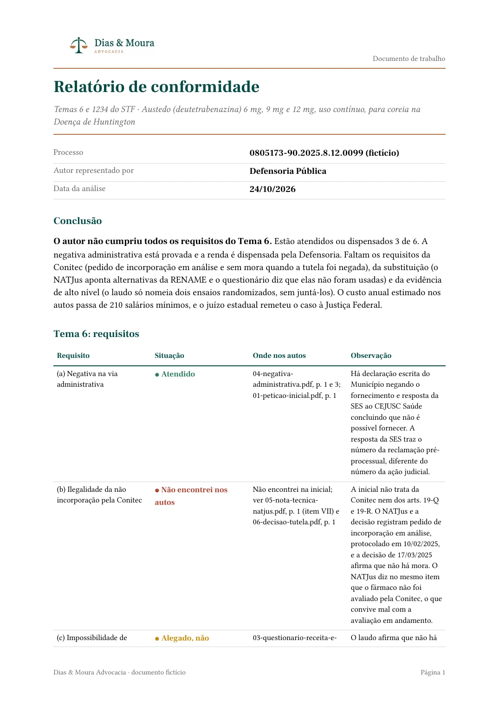
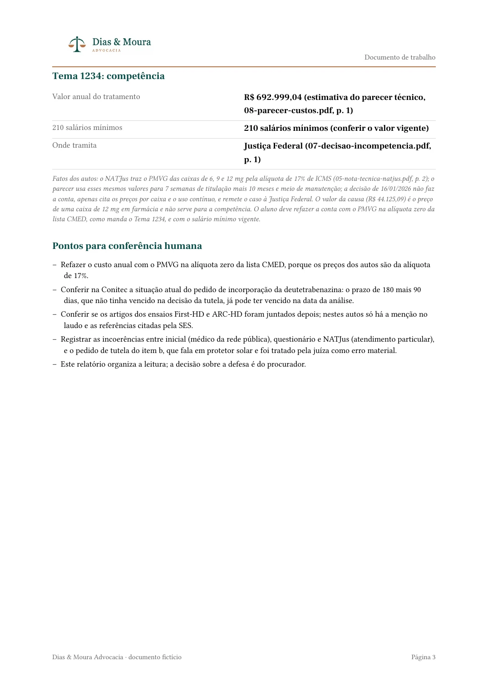

Curso de IA · Aula 2
Do chatà pasta
Como pedir bem e trabalhar nos documentos do caso.
Roteiro
A tarde em seis etapas
- 1pedir bem
- 2duas escolhas
- 3skills
- 4na pasta
- 5mão na massa
- 6fecho
Cada etapa termina numa tarefa sua.
Pedir bem
Você reescreve até chegar lá
distância do que você queria
1
“Resume esse parecer.”
longo e genérico
2
“Resume em 10 linhas.”
curto, sem foco
3
“Resuma o parecer em 10 linhas para o procurador-chefe, só com o que muda o prazo. Se não houver, diga.”
o que você queria
A terceira diz o objetivo, para quem e o que fazer se faltar.
Pedir bem
Prompt é briefing para colega novo
Vago
o que costuma sair
“Resume esse acórdão.”
Briefing
o que o colega precisa
“Objetivo: o que muda o prazo. Contexto: o contrato e o aditivo. Regra: cite o trecho.”
exemplo de pedido
Seis elementos, nem todos obrigatórios
- 1objetivo
- 2contexto
- 3persona
- 4saída
- 5exemplos
- 6regras
Pergunta simples pede só o objetivo.
Elemento 1
Objetivo: o que você quer
“Escreve sobre inteligência artificial.”
“Escreva um parágrafo de 100 palavras sobre como a IA é usada no Judiciário brasileiro, com 2 aplicações concretas.”
Elemento 2
Contexto: o que a IA precisa saber
“Me ajuda a redigir um parecer.”
“Sou procurador do Estado. Preciso de parecer sobre a legalidade de convênio entre o Estado de MS e um município, repasse de R$ 2 milhões, à luz da Lei 14.133/2021 e da LC 101/2000.”
O que você anexa também é prompt. O essencial vai no começo ou no fim.
Elemento 3
Persona: quem a IA deve ser
“Me explica o que é precatório.”
“Você é professor de direito financeiro explicando a servidores que não são da área jurídica. Explique o que é precatório, como o pagamento funciona e por que demora. Sem jargão.”
A mesma pergunta, três papéis
“O que é precatório?”
Professor para leigos
Dívida do governo que a Justiça mandou pagar. Entra numa fila.
Consultor sênior
Requisição de pagamento de condenação da Fazenda, em ordem cronológica.
Procurador do Estado
Débito judicial da Fazenda: confira cálculo, ordem e orçamento.
A persona muda o registro da resposta inteira.
respostas ilustrativas, escritas para a aula
Elemento 4
Estrutura de saída: o formato da resposta
“Me dá argumentos para contestar essa tese.”
“Liste 5 argumentos para contestar a prescrição intercorrente. Para cada um, o fundamento legal, a explicação em 2 frases e um precedente do STJ ou STF, se houver.”
tabelalista numeradapasso a passoprós e contras
Elemento 5
Exemplos: mostre o que você quer
Zero-shot
tarefa simples e clara
só a instrução
One-shot
tom ou formato específico
1 exemplo resolvido
Few-shot
tarefa ambígua ou subjetiva
2 a 5 exemplos
Exemplos continuam muito poderosos.
Elemento 6
Regras: o que a IA não faz
“Analisa essa cláusula.”
“Analise a cláusula 7ª. Só legalidade, não conveniência. Aponte o que for ambíguo. Cite os artigos. Sem jurisprudência clara, diga.”
Se não souber, diga que não sabe.
Juntando tudo
PersonaProcurador do Estado, experiente em licitações.
ObjetivoAnalise o edital e aponte irregularidades jurídicas.
ContextoEscola estadual, R$ 5 milhões, impugnação em 5 dias úteis.
SaídaTabela: cláusula, irregularidade, fundamento legal, risco.
ExemploAtestado de obra idêntica: art. 67, §1º, Lei 14.133/2021, risco alto.
RegrasNão invente artigos. Na dúvida, “verificar manualmente”.
Prompt bom traz a informação certa.
Caso
O contexto muda tudo
“Escreve uma resposta para o Tribunal de Contas.”
“Responda ao ofício do TCE-MS sobre o convênio de pavimentação. O TCE diz que falta o plano de trabalho. O plano existe e foi juntado em apenso. Tom formal, não defensivo, até 250 palavras.”
Prática 1, 4 min
Sua vez: reescreva um pedido seu
- 1Pegue um pedido que você faz hoje.
- 2Reescreva com objetivo, contexto e uma regra.
- 3Cole no seu app e compare.
Antes de enviar
- objetivo
- contexto
- persona
- saída
- exemplos
- regras
O que mudouna resposta?
Duas pessoas leem em voz alta.
Duas escolhas
Tudo o quea IA lêé prompt
o que a IA lê
seu pedido
anexos
instruções
memória
conversa anterior
O contexto costuma chegar por anexos, instruções e memória.
Duas escolhas
No chat, você sobe tudo de novo
Conversa 1
primeira vez



Seguem os três papéis.
Conversa 2
de novo
Seguem os três papéis.
Conversa 3
de novo
Seguem os três papéis.
Conversa nova, upload novo.
Duas escolhas
O chat responde. O agente age.
Chat
Agente
você autoriza
você ajusta
O agente usa ferramentas: ler, buscar, criar, rodar.
Duas escolhas
O agente propõe; você confere
- planopeça o plano
- acessosveja o que ele abre
- autorizaautorize a ação
- revisaleia o que mudou
Cada passo para antes do próximo.
Duas escolhas
Um processo grande, vários agentes
Um agente por PDF, cada um com a sua mesa
Uma cronologia única, com arquivo e página.
Duas escolhas
Quem despacha agentes
Claude Code
Sim. Até 20 ao mesmo tempo.
Codex
Sim, no app, no terminal e no editor.
ChatGPT Work
Sim, em contas elegíveis. Peça de forma explícita.
Chat comum
ChatGPT, não. Claude, teste.
Pergunte à sua ferramenta se ela despacha agentes.
Duas escolhas
Duas escolhas independentes
Instruções e memória
Documentos
anexados
numa pasta
na conversa
no Projeto
Chat
Tarefa com pasta
Projeto
Projeto com pasta
processo: sempre aqui
Para integrar sistemas, raspar dados e automatizar: Claude Code e Codex.
Duas escolhas
O Projeto guarda o seu jeito
Projeto
Caso Vila Serena
Instruções
Cite arquivo e trecho.
Memória
Contrato 07/2019, Vila Serena
Contexto
contrato, aditivo, notificação
Pasta
caso-ficticio/
Programado
nenhuma rotina
Visível e editável com um clique.
No ChatGPT, Projeto também guarda instruções e arquivos.
Duas escolhas
Processo? Trabalhe com pasta
- Volume
- Lê só o trecho
- Sem reenviar
- A entrega fica ao lado da fonte
- Você libera só a pasta
No anexo, o processo entra inteiro na conversa e ocupa a mesa; na pasta, o agente abre só o que precisa.
O agente busca a data e abre só o trecho de que precisa.
Os papéis ficam na pasta, e a conversa nova não pede upload.
A cronologia nasce na mesma pasta dos papéis que ela cita.
Você escolhe a pasta; o agente trabalha dentro dela.
Duas escolhas
O agente leu 0,2% do processo
348
páginas e 129 mil palavras
achou a data em 6 milissegundos
teste com processo fictício
Duas escolhas
Guardar a lei ou pesquisar?
Guarde
- leis que você usa sempre
- jurisprudência favorável que você cita
- em .md, com fonte e data da conferência
Pesquise
- jurisprudência nova
- alterações de lei
para o agente
Lei alterada? Consulte o site oficial e diga a data.
Duas escolhas
O PDF é lido inteiro?
No chat
O PDF inteiro entra na conversa.
Na pasta
O agente abre só o trecho.
Se o PDF for digitalizado, o texto precisa ser reconhecido antes.
Duas escolhas
PDF ou Markdown?
PDF, foto da página
rodapé repetido
Markdown, só texto
## Cláusula terceira, do prazo
As partes firmam este contrato em 12/03/2019, com vigência de 36 (trinta e seis) meses, contados da assinatura.
- gasta menos
- erra menos
- acha o artigo certo
Duas escolhas
Converter tudo?
Não
Vai reusar
Converta para Markdown.
Pergunta única
Suba o PDF como está.
Escaneado
Precisa de reconhecimento de texto antes.
Guarde o PDF como prova e o Markdown como cópia de trabalho.
Duas escolhas
Claude Code e Codex são para quem constrói
Integrações
Sistemas, por MCP e APIs.
Raspagem
Dados de sites e tribunais, em lote.
Automação
Scripts e rotinas para centenas de arquivos.
Controle
Plano, permissões e mudanças visíveis.
Claude e ChatGPT Work também têm conectores.
Duas escolhas
Quatro nomes, dois pares
Pedir uma entrega
Trabalhar na pasta como um desenvolvedor
Anthropic
OpenAI
Claude
o antigo Cowork
Claude Code
ChatGPT Work
Codex
O Cowork não existe mais. Virou o próprio Claude em 16/09/2026.
Duas escolhas
O que muda entre os quatro
Claude
ChatGPT Work
Claude Code
Codex
para que serve
pedir uma entrega
trabalhar como desenvolvedor
onde roda
nuvem; pasta no app desktop
nuvem; arquivos no app desktop
terminal, editor, desktop e web
app desktop e nuvem
quem tem
Pro e Max; Team e Free depois
planos pagos elegíveis
pagos; Pro, US$ 20/mês
até o gratuito, no desktop
Duas escolhas
Como escolher em 10 segundos
Um arquivo só?
chat com anexo
Quer o documento pronto, em Word ou planilha?
Claude ou ChatGPT Work
É processo, ou vai reusar?
Projeto com pasta
Precisa integrar sistemas, raspar dados ou automatizar?
Claude Code ou Codex
Skills
Escreva o seu jeitouma vez.
Skills
Skill é o seu jeito de fazer, escrito uma vez
cronologia-com-fonte/SKILL.md
---
name: cronologia-com-fonte
description: Monta a cronologia de um caso com a data de cada fato e a fonte de cada data. Use quando o pedido for cronologia, datas ou prazos dos documentos da pasta.
---
Leia todos os documentos da pasta do caso.
Liste cada data com o fato correspondente, em ordem.
Para cada data, cite o arquivo e o trecho exato.
Se a informação não estiver nos documentos, escreva "não encontrei nos documentos". Não deduza.
Salve o resultado em cronologia.md.
nome
descriçãodiz quando usar
instruções
O modelo só lê o nome e a descrição até decidir usar.
Skills
O mesmo arquivo nos dois
Claude
ChatGPT e Codex
onde mora
.claude/skills/nome/SKILL.md
.agents/skills/nome/SKILL.md
como chamar
/nome
$nome no Codex
@nome no ChatGPT
Escreva uma vez, use nas duas ferramentas.
Skills
O que liga o agente ao mundo
Agente
Skill
o jeito
MCP
a tomada para sistemas
Plugin
o pacote com os dois
Plugin e MCP na prática ficam para o dia 2.
Na pasta
Três papéis na pasta do caso

caso-ficticio/
contrato.pdf
aditivo.pdf
notificacao.pdf
imagem gerada por IA
Na pasta
O que está na pasta
caso-ficticio/
contrato.pdf
aditivo.pdf
notificacao.pdf
memoria.md
cronologia.md
.claude/skills/cronologia-com-fonte/
SKILL.md
os três papéis
o contexto do caso
o agente vai criar
o jeito de fazer
Pronto antes da aula. Nada é criado ao vivo, só a cronologia.
Na pasta
A memória do caso, em Markdown
caso-ficticio/memoria.md
Memória do caso
Contrato nº 07/2019, manutenção predial: Município de Vila Serena e Horizonte Manutenção Predial Ltda.
Os três documentos são fictícios, para a aula.
Trate prazo e multa como pontos de conferência humana.
Responda em português, em frases curtas.
Texto limpo, que qualquer agente lê e que fica de um dia para o outro.
Demonstração
Agora,funcionando.
Demonstração
O pedido e os cinco passos
pedido
Monte a cronologia do caso com a data de cada fato. Para cada data, cite o arquivo e o trecho. Inclua a data do último pagamento. O que não estiver nos documentos, diga que não encontrou. Salve em cronologia.md.
- Abra a pasta.
- Cole o pedido.
- Leia o plano e autorize.
- Abra o cronologia.md.
- Confira um trecho no papel.
Demonstração
Ao vivo no Claude, na pasta
Monte a cronologia do caso com a data de cada fato. Para cada data, cite o arquivo e o trecho. Inclua a data do último pagamento. O que não estiver nos documentos, diga que não encontrou. Salve em cronologia.md.
Lendo
contrato.pdfaditivo.pdfnotificacao.pdfPlano
- Ler os três documentos.
- Listar cada data com arquivo e trecho.
- Marcar o que não estiver nos papéis.
- Salvar cronologia.md.
Criar cronologia.md nesta pasta?
PermitirRecusarEscrevendo cronologia.md
Salvei cronologia.md com as datas, cada uma com arquivo e trecho.
Data do último pagamento: não encontrei nos documentos.
cronologia.mdMonte a cronologia do caso com a data de cada fato. Para cada data, cite o arquivo e o trecho. Inclua a data do último pagamento. O que não estiver nos documentos, diga que não encontrou. Salve em cronologia.md.
simulação por código; a gravação da aula substitui
Conferência
Cada data aponta para o papel
contrato.pdf
aditivo.pdf
notificacao.pdf
cronologia.md
12/03/2019: contrato assinado
01/04/2021: aditivo prorroga 12 meses
20/02/2023: multa de 2% notificada
Último pagamento
não encontrei nos documentos
Conferência
Confira o trecho no papel
cronologia.md
12/03/2019
contrato assinado,
vigência de 36 meses
contrato.pdf, cláusula terceira

contrato.pdf
Conferência
A conclusão jurídicafica com você.
Mão na massa
O mesmo pedido no Codex
Claude
ao vivo
Na pasta do caso, agora, com a sala.
Codex
gravado no ensaio
O mesmo pedido, na mesma pasta.
gravação do professor
Mão na massa
O kit está no GitHub
kit-aula2-curso-ia
Code
- casos
- escritorio
- gabarito
- temas
- README.md
Depois de extrair
kit-aula2-curso-ia-main
- casos
- temas
- escritorio
- gabarito
Mão na massa
Prática 1: confira o caso 2
- Abra a pasta.
- Cole o pedido.
- Leia a tabela.
- Abra a página citada.
- Confira.
O pedido
Você é procurador do Estado de Mato Grosso do Sul. Confira, pelos Temas 6 e 1234 do STF (arquivos na pasta temas), se o autor do caso 2 cumpriu os requisitos (a) a (f). Os autos estão em casos/caso-2.
Para cada requisito, diga se está atendido, alegado sem prova ou não encontrado, com arquivo e página. Se não achar no documento, diga que não achou. No fim, diga a competência pelo Tema 1234.
Mão na massa
Processo grande?Um agente por PDF.
Mão na massa
O que a skill entrega


Logo no cabeçalho
o padrão do escritório
Situação em cor
com arquivo e página
Competência
e conferência humana
logo gerado por IA
Mão na massa
A skill faz isso sozinha
conferir-temas
Confere os Temas 6 e 1234 e entrega um Word.
- Lê os temas.
- Lê os PDFs do caso.
- Classifica de (a) a (f).
- Aplica as regras fixas.
- Gera o Word.
- Lista o que conferir.
Como instalar
Claude, Work e Codex
Peça ao agente: instale a skill da pasta gabarito/skills/conferir-temas.
Não apareceu?
Feche e abra o app de novo.
Mão na massa
Prática 2: rode a skill no caso 6
- Instale a skill.
- Rode no caso 6.
- Autorize o plano.
- Abra o Word.
- Confira o gabarito.
Instale a skill conferir-temas que está em gabarito/skills. Depois use-a no caso 6 e grave o relatório em saida/caso-6.
Mão na massa
Travou? Quatro saídas
Sem plano ou sem app
Acompanhe na tela do professor.
PDF sem texto
Se for digitalizado, reconhecer o texto antes demora.
O Word não saiu
Peça o .docx pelo nome ou abra o gabarito.
A skill não aparece
Reinicie o app.
Mão na massa
Mostre o seuWord.
Fecho
O que você leva hoje
- 1pedido com seis elementos
- 2se não souber, diga
- 3projeto com pasta
- 4skill escrita uma vez
- 5confira a fonte
- 6baixe do GitHub
Comece pelo próximo processo que chegar.
Fecho
O próximo encontro
Dia2
- MCP e plugins
- Rotinas
- Raspagem de jurisprudência do TJMS e do STF
- Casos práticos
- Artefatos e apresentações
- Devolutiva
Curso de IA · Aula 2
Trabalheno caso,não no chat
Obrigado.